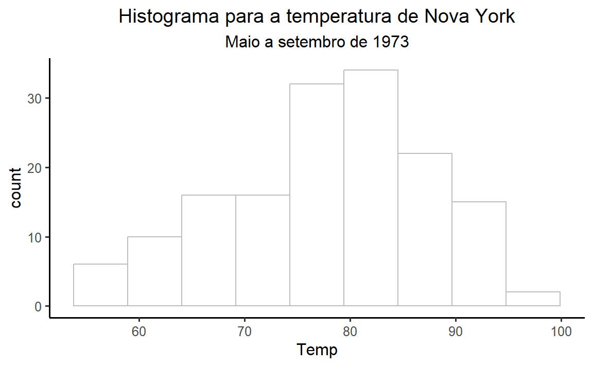

| fheight | sheight |
|---|---|
| 66.0 | 66.3 |
| 68.2 | 67.6 |
| 66.2 | 67.1 |
| 69.8 | 69.6 |
| 67.5 | 67.0 |
| 63.1 | 74.3 |
| 66.6 | 68.2 |
| 61.0 | 69.1 |
| 64.5 | 68.3 |
| 67.5 | 66.1 |
father.son
father.sonConjunto de dados de Pearson sobre alturas de pais e filhos
fheighti: altura do pai em polegadassheight: altura do filho em polegadasfather.son
| fheight | sheight |
|---|---|
| 66.0 | 66.3 |
| 68.2 | 67.6 |
| 66.2 | 67.1 |
| 69.8 | 69.6 |
| 67.5 | 67.0 |
| 63.1 | 74.3 |
| 66.6 | 68.2 |
| 61.0 | 69.1 |
| 64.5 | 68.3 |
| 67.5 | 66.1 |
father.son
mtcarsOs dados foram extraídos da revista Motor Trend US de 1974 e abrangem o consumo de combustível e 10 aspectos do design e desempenho de automóveis para 32 carros (modelos de 1973-74)
mpg: milhas/galão (km/l)wt: peso (1000 lbs)mtcars
| wt | mpg |
|---|---|
| 2.9 | 21.0 |
| 2.3 | 22.8 |
| 3.8 | 19.2 |
| 3.5 | 15.5 |
| 3.4 | 17.8 |
| 3.6 | 14.3 |
| 2.5 | 21.5 |
| 3.5 | 18.1 |
| 3.1 | 22.8 |
| 3.2 | 15.8 |
mtcars
diamondsUm conjunto de dados contendo os preços e outros atributos de quase 54.000 diamantes.
price: preço em dólares americanoscarat: peso do diamante (quilates)diamonds
| carat | price |
|---|---|
| 1.6 | 11,220.0 |
| 1.0 | 7,251.0 |
| 1.3 | 10,071.0 |
| 1.1 | 5,273.0 |
| 0.3 | 906.0 |
| 1.3 | 7,415.0 |
| 1.4 | 12,614.0 |
| 0.3 | 734.0 |
| 0.7 | 2,956.0 |
| 0.4 | 952.0 |
diamonds
airqualityMedições diárias da qualidade do ar em Nova York, de maio a setembro de 1973
Ozone: quantidade de ozônio (ppb - partes por bilhão)Solar.R: irradiaçao solar (lang - 1 lang é igual a um caloria por centímetro quadrado)Wind: velocidade do vento (mph - milhas por hora)Temp: temperatura (F - graus Fahrenheit)Month: mês da mediçãoDay: dia da mediçãoairquality
| Ozone | Solar.R | Wind | Temp | Month | Day |
|---|---|---|---|---|---|
| 41 | 190 | 7 | 67 | 5 | 1 |
| 36 | 118 | 8 | 72 | 5 | 2 |
| 12 | 149 | 13 | 74 | 5 | 3 |
| 18 | 313 | 12 | 62 | 5 | 4 |
| NA | NA | 14 | 56 | 5 | 5 |
| 28 | NA | 15 | 66 | 5 | 6 |
| 23 | 299 | 9 | 65 | 5 | 7 |
| 19 | 99 | 14 | 59 | 5 | 8 |
| 8 | 19 | 20 | 61 | 5 | 9 |
| NA | 194 | 9 | 69 | 5 | 10 |
airquality
Age datasetO conjunto de dados contém informações estruturadas sobre a vida, obra e morte de mais de 1 milhão de pessoas famosas falecidas.
Age of death: idade com que a pessoa morrreuAge dataset
| Name | Age of death |
|---|---|
| Michael Oakeshott | 89 |
| André Rasenberg | 80 |
| Louis Gassin | 75 |
| Niels Adeler | 66 |
| Bill Horstmeyer | 34 |
| Mihail Fjodorovič Ivanov | 64 |
| Edmondo de Amicis | 62 |
| Charles W. Christmas | 86 |
| Enrique Arancibia Clavel | 67 |
| Pedro Paulo Penido | 63 |
Age dataset
A fórmula da média: \[ \bar{x} = \frac{\sum_{i=1}^n x_i}{n} \]
A formula da média em um formato um pouco mais simples: \[ \bar{x} = \frac{x_1 + x_2 + \cdots + x_n}{n} \]
Qual foi a média de temperatura dos cinco primeiros dias do mês de maio de 1973 em Nova York?
| Month | Day | Temp |
|---|---|---|
| 5 | 1 | 67 |
| 5 | 2 | 72 |
| 5 | 3 | 74 |
| 5 | 4 | 62 |
| 5 | 5 | 56 |
\[ \text{Temp} = \{67, 72, 74, 62, 56\} \]
\[ \bar{X} = \frac{67 + 72 + 74 + 62 + 56}{5} \]
\[ \bar{X} = \frac{331}{5} \]
\[ \bar{X} = 66.2 \]
Qual medicamento é mais eficiente?
| Droga | Pacientes | Ataques |
|---|---|---|
| Nova | 500 | 200 |
| Padrão | 1000 | 300 |
| Droga | Pacientes | Ataques | Ataques/paciente |
|---|---|---|---|
| Nova | 500 | 200 | 0.4 |
| Padrão | 1000 | 300 | 0.3 |
Temp do banco de dados airquality:
| bins | Contagem |
|---|---|
| (0,60] | 8 |
| (60,65] | 10 |
| (65,70] | 15 |
| (70,75] | 19 |
| (75,80] | 33 |
| (80,85] | 34 |
| (85,90] | 20 |
| (90,95] | 12 |
| (95,100] | 2 |

price, do banco de dados diamonds)sheight, do banco de dados father.son)Age of death, do banco de dados Age dataset: life, work, and death of 1.22M people1)sheight)gols_do_brasileiro
campeonato: o ano do campeonatopartida: sequência da partida no campeonatodata: data de realização da partidaestádio: estádio em que a partida foi realizadagols: número de gols da partida| campeonato | partida | data | estadio | gols |
|---|---|---|---|---|
| 2017 | 252 | 30-09-2017 | Itaipava Arena Fonte Nova | 2 |
| 2021 | 245 | 09-10-2021 | Estádio Joaquim Américo Guimarães | 2 |
| 2022 | 234 | 27-08-2022 | Arena Castelão | 0 |
| 2015 | 175 | 12-08-2015 | Orlando Scarpelli | 2 |
| 2021 | 74 | 30-06-2021 | Estádio de Pituaçu | 7 |
| 2021 | 257 | 13-10-2021 | Neo Química Arena | 1 |
| 2017 | 221 | 09-09-2017 | Estádio Raimundo Sampaio | 2 |
| 2018 | 135 | 22-07-2018 | Vila Capanema | 1 |
| 2020 | 353 | 13-02-2021 | Estádio Urbano Caldeira | 2 |
| 2022 | 169 | 17-07-2022 | Estádio Raimundo Sampaio | 3 |
gols_do_brasileiro